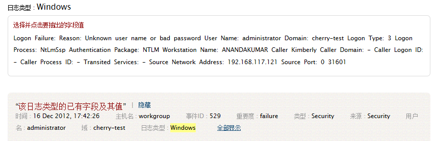
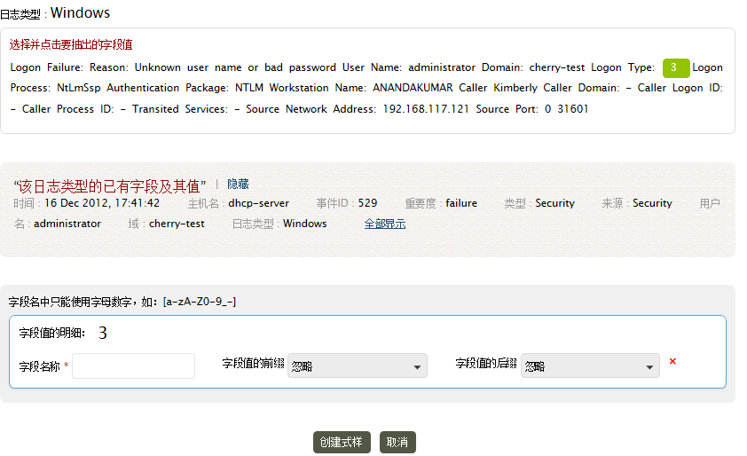
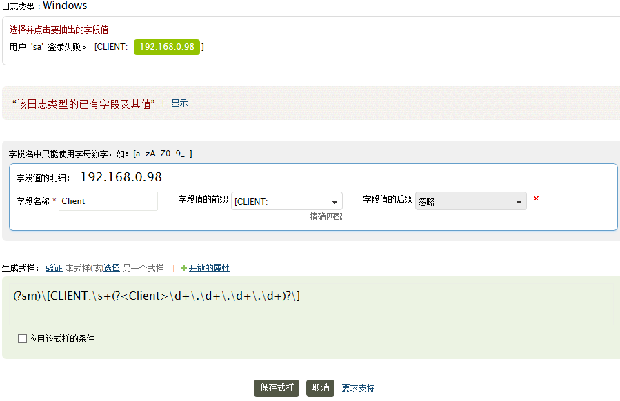
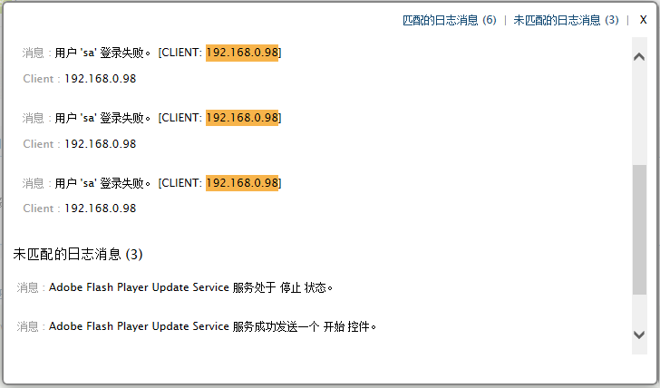
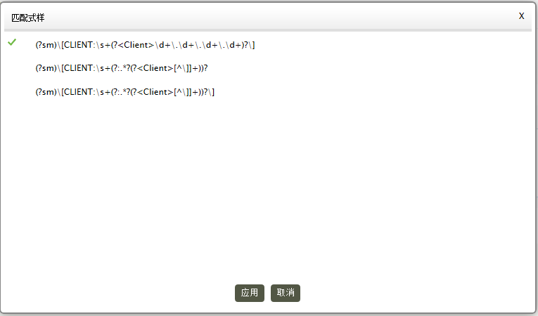

提取新字段来分析和索引日志
网络管理员总是需要从他们的日志中获取更多的信息。那么有的时候管理员需要定位到他们关心的字段来索引需要的信息。新的字段可以帮助你从日志中索引更多有用的信息，使得日志分析和创建的安全报表更加有效。
EventLog Analyzer可以让管理员从原始日志中提取创建新的字段。通过交互式的字段提取页面创建正则表达式的模式来识别、分析新系统和应用日志中的新字段。
提取新字段的步骤
打开搜索页面，选择主机或主机组，如果不确定，可以不选择，那么就会在所有主机中搜索。然后选择你要提取新字段的日志类型。在搜索文本框中输入搜索的字符，如果没有输入，将列出所有日志条目。点击执行按钮列出搜索结果。点击你要创建新字段所在日志后面的扳手图标。
第1步：查看日志类型和已经存在的字段

-
对于非默认的日志类型，日志类型处就会显示导入的日志文件名或主机/端口。
-
查看该日志类型的已有字段及其值，通过点击显示和显示全部链接来查看详情。
第2步：选择需要的字段值并输入详细信息

-
在消息中选择并点击要提取的值。
-
提供该值的字段名。指定字段值的前后缀。
-
点击创建模式来生成分析规则和正则表达式的模式。
 |
说明：选择字段值的前面和后面的字符就是其先后缀。可是是的字段定位更加的准确。前后缀可以是一个静态的值（准确匹配）或者动态的值（这表达式的模式），也可以忽略。 |
前后缀的静态和动态值示例
| 如有日志： Successful Network Logon: User Name: sylvian Domain: ADVENTNET Logon ID: (0x0,0x6D51131) Logon Type: 3 Logon Process: NtLmSsp Authentication Package: NTLM Workstation Name: SYLVIAN Logon GUID: - Caller User Name: - Caller Domain: - Caller Logon ID: - Caller Process ID: - Transited Services: - Source Network Address: 192.168.113.97 Source Port: 0 22873 |
前缀Logon Type可以是静态值，因为大部分的日志都有Logon Type字样。而对于Source Network Address可以是动态的，因为日志中可能使用不同的描述，如Source IP Address、Source Address，而这些描述都可以使用一个正则表达式模式。
当然，如果前后缀都使用准确匹配，那么字段提取就会更加精准。
第3步：验证模式并保存为新的字段

-
在上步中创建了字段后生成了规则模式。
-
验证链接用来在上次搜索结果中测试生成的正则表达式模式。通过“匹配的日志消息”和“未匹配的日志消息”来检查该正则表达式模式是否可用。
验证结果如下图：

-
在验证结果中，如果你发现该模式并不满足你的需要，如果你对正则表达式精通的话，可以手动修改。否则可以从选择其他模式选择一个其他的模式。（如下图）

你还可以给这个字段添加开放性的属性。如下图所示：

-
另外，对于特殊的日志类型，你可以给任意已有的字段定义匹配条件。
-
保存模式后，EventLog Analyzer就会在新的系统和应用日志中开始识别、分析和索引这些定制的字段。
定制的模式（分析规则）可以标记（或取消标记）为用户定义日志类型的识别规则。多个定制模式可以同时标记为某一个具体的用户定义日志类型的识别规则。
设置标签中自定义模式列出所有已经保存的模式。
-
如果你要从Evenglog Analyzer的技术支持那里获得更多帮助，请点击要求支持链接。
|